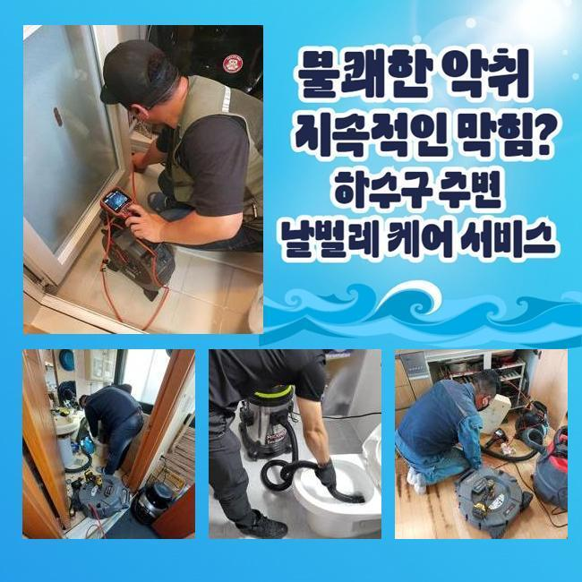
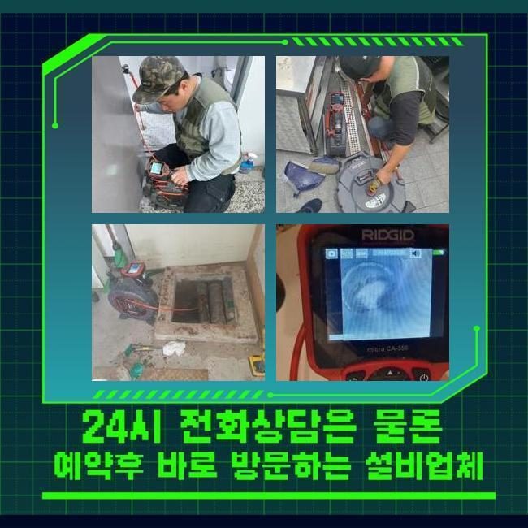
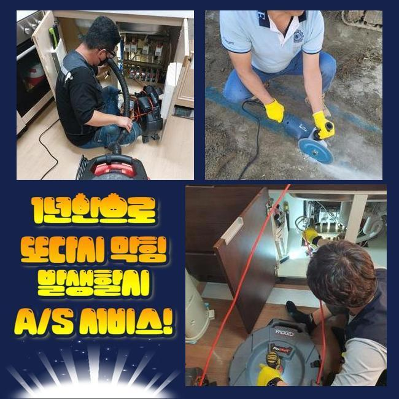
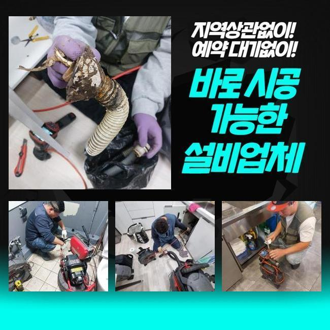
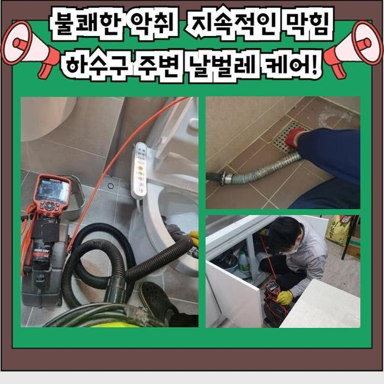
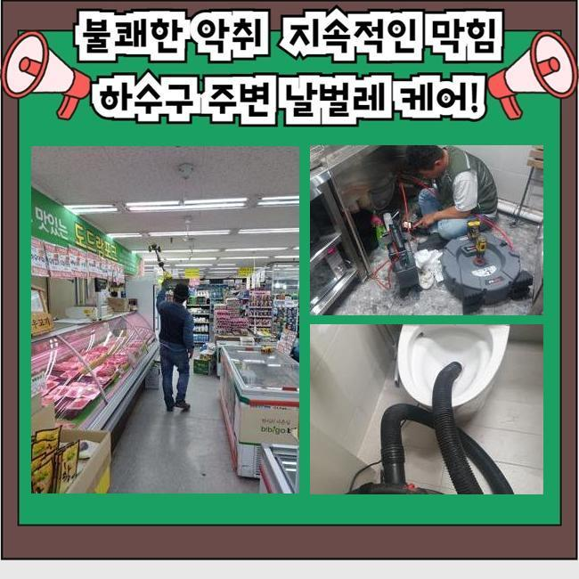

🏠 안산 안산동싱크대막힘 해양동 배수로뚫기 배관설비공사
안산 해양동 싱크대막힘 전문 시공 후기

📋 작업 개요
- 위치: 안산 해양동, 해양동, 안산
- 서비스 유형: 싱크대막힘, 하수구막힘, 배관막힘, 누수수리, 역류해결, 뚫는업체, 배관청소, 고압세척, 설비공사
- 작업 일시: 2025. 4. 14. 23:48
- 업체명: 하수구수사대 (010-5615-2118)
🔍 문제 상황
안산 안산동싱크대막힘 해양동 배수로뚫기 배관설비공사
이틀전 빌라 건물에서 씽크대배수구 막힘문제로 긴급한 문의를 주셨으므로 저희업체가 내방드려 보았죠
지금 상태로는 배수가 정상적이지 못했고 씽크대에서 역류문제도 발생하여 신속히 작업이 요구되었어요
역류한다면 악취까지도 일어날수 있어요
고객분께서 알려주신 것으로는 물자체가 느린속도로 흘러가던 부엌 씽크대가 며칠이 지나자 역류현상이 발생한 상황이라고 설명해 주셨어요
지금 상황이라면 가볍게 막힘문제가 일어난것이 아니고 하수구안쪽에 음식물잔해나 기름이물이 배관속에 잔존되어있을 여지가 있죠
막힘현상을 처리해 드리고자 작업장소로 방문드린후 상태를 명확히 파악해보려고 하부장주위를 확인했어요
열어보니 눈에 띈 것은 하수관과 연결되어진 주름 호스 부근의 심한 역류 흔적이었어요
넘친 하수와 오염물질들이 호스주변으로 넘쳐버려 상황자체가 좋지않았어요
배수관속에 이물질이 자리잡아 하수들이 조금씩 빠지지 못하면서 역류사태가 불거진걸로 파악할수 있었네요
자가조치로 타파가 가능한 방법에 대하여 간략히 설명드려 볼게요
유한락스를 배수구에 부어준뒤 한시간정도 대기했다가 잔해물과 희석시켜 흘러가게 청소하는 방법인데요

🔎 원인 분석
💡 전문가 진단: 정밀 진단 장비를 사용하여 슬러지의 고착 여부를 판명하고 타격/세척 작업을 실시했습니다.
생각과달리 락스사용은 명확하게 현상들을 처리하기란 어렵죠
막힌 원인에 대해 명확히 알고있어야 해요 막혀버린 연유가 기름으로 인해서 막힌거라면 뜨거운물로 제거해주어야 하는데요
기름슬러지는 날이흐를수록 끈적하고 단단하게 굳어버릴수 있으므로 물리방법을 이용해서 소거시키는게 효과적인 방안이에요
혹여라도 음식잔해물의 걸림인 것이라고 생각이된다면 펑크린같은 용품을 사용해서 대처해 보시는게 좋겠습니다
유한락스는 원래의 용도자체가 살균소독이기에 기름슬러지를 중화시키는 능력자체는 부족하답니다
클리너는 일반적인 락스랑은 다르고 배관을 뚫을때나 청소할때 쓰게되는 용해제에요
활용법은 막힘이 일어난곳에 클리너를 부어준뒤 20~30분쯤 대기해 주었다가 온수로 세척하는 방법을 통하여 효율을 볼수 있죠
제품자체가 유해하여 손을 보호할수있는 장비들을 착용해주시고 통풍이 유효한 영역에서 활용하실것을 권장드립니다
이런 방식들을 조치해봐도 문제해결이 안된다면 전문가에게 의뢰하시는게 현명한 선택이에요
셀프처리를 시도하다가 도리어 크랙이 발생되어 누수나 역류같은 피해로 불거질수있기 때문인데요
금번지점의 경우엔 배수되는 관로자체가 굉장히 좁았어요
수도꼭지를 틀은뒤 배수상태를 체크했는데 막히는 구간이 있는것을 살필수 있었어요
이러한 상황이다보니 막힘증상의 분명한 이유에 대하여 파악하는게 필요했죠

🔧 작업 과정
배관구조가 좁은 상태이다보니 하수구카메라 진입공간을 확보해주고자 관로의 일부정도를 타공했죠
배관작업에 필수적인 부분들만 타공을 하기에 걱정마세요
확보되어진 구멍으로 내시경기를 투입시켰고 화면을 통하여 현재상태를 파악했는데요
내시경의 경우에는 명확한 진단을 위하여 항시 구비되는 전문도구로 두눈만으로는 살펴보기 힘든곳을 파악해보는데 적합한 장비죠
깜깜한곳도 장비끝에 달린 조명으로 현재상황을 확인할수 있기에 잔해물의 성질과 막힌위치에 대하여 판단할수 있어요
하수구 깊은쪽에 리모델링중 유입된걸로 추정할수있는 시멘트조각이 다량으로 발견되었죠
하수도내벽에 고착된 상태로 있었기에 간단한 방식으로는 제거해 내기가 곤란한 상황이었어요
석회화가 심각하지 않다면 흡입하는 장비로도 오염물 흡입이 가능하답니다
석션기구의 용도는 가정집 청소기처럼 슬러지나 하수들을 흡입해주는 장비랍니다
배관막힘이 일어났을때 여러 방면에서 이용됩니다
샤프트라고 불리는 기계를 사용하여 고착된 덩어리를 조각내는 방식을 선택했죠
샤프트기의 경우에는 줄끝에 노커사슬이 이어져있는 기기에요
작동시키면 체인이 회전하게 되면서 석회덩어리를 분해시키죠
알맞은 강도대로 조절해가며 진행해 주어야 이물이 분쇄되는데요
배관안속에 크랙이 발생되지 않게끔 주의하는게 중요하겠습니다
분쇄공정을 착수하면서 배관카메라도 투입한후 배관속을 정확히 살펴보며 안전성을 유의하고있죠
일련의 과정들을 마무리한 뒤에도 정확히 작업과정이 이루어진 것인지 재차 내시경을 통해 체크해준 뒤에야 마치는데요
작업이 완료되었으니 배수검수를 시작했는데요
원활히 배수관이 세척되었기에 꿀렁거리는 소리없이 확실하게 흘러나가는걸 살펴볼수 있었답니다
막힌원인을 타파하고 작업이 마무리되는 과정까지 자세하게 진행해주었죠


✅ 작업 완료
테스트까지 끝나면 문의자에게 막힘과 관련되어 예방책들을 전달드리고 있죠
막힘을 내버려 둔다면 여러가지 증상들로 이어질수도 있답니다
아파트나 식당같이 많은 사람이 이용하는 장소라면 신속한 대처가 필요해요
막힘발생시 배관업체를 찾으시는 중이라면 저희업체로 의뢰주셔서 확실하게 뚫어내는 결과로 맞이해보시길 바래요!
이것말고도 궁금증이 남겨져 있다면 시간관계없이 문의하셔도 되니까 편히 걸어주시길 바랄게요!




⚠️ 베란다 누수 및 방수 관리 방법
- ✅ 비가 많이 올 때 창틀 주변이나 아래층 천장에 얼룩이 생기는지 정기적으로 확인해 보세요.
- ✅ 우수관 주변 실리콘 마감이 들뜨거나 깨진 틈새가 있는지 손상 여부를 수시로 체크하세요.
- ✅ 베란다 바닥 타일의 줄눈(메지)이 소실되면 그 틈으로 물이 침투하여 누수가 유발됩니다.
- ✅ 누수 의심 증상 발견 시 방치하면 아래층 손실이 커지므로 즉시 전문가의 진단을 받으십시오.
💡 핵심 정리
- 확실한 장비 작업(내시경 점검 및 샤프트 스케일링)으로 원인을 뿌리 뽑습니다.
- 작업 후 1년 이내에 동일한 부위 재발 시 100% 무상 A/S 서비스를 보장합니다.
- 서울 · 경기 · 인천 전 지역에 24시간 언제든 긴급 출동할 수 있도록 항시 대기 중입니다.
❓ 자주 묻는 질문 (FAQ)
🚨 안산 해양동 싱크대막힘 문제로 고민이신가요?
정확한 원인 진단과 확실한 시공으로 재발 없는 해결을 약속드립니다.
24시간 긴급 출동 | 서울 · 경기 · 인천 전지역 | 1년 내 재발 시 무상 A/S